From legendary parks to some of the most spectacular roller coasters in the world.
Slides, lagoons and water experiences to discover around the world.
Remarkable places to discover wildlife and enjoy a unique animal experience.
Zip lines, jungle, caves and spectacular experiences in the heart of nature.
From major resorts to parks famous for their roller coasters, discover a selection of theme parks that can become the starting point for a trip.

Two theme parks, iconic attractions and a world that can easily become the heart of a multi-day stay just outside Paris.
🎢 Disneyland Park and Disney Adventure World offer very different worlds, from family attractions to more immersive experiences.
💡 Its proximity to Paris makes it easy to combine the parks with a few days in the French capital.
📍 Discover Paris → 🌐 Official website →
An iconic French theme park combining family attractions, worlds inspired by the famous comic books and thrilling roller coasters.
🎢 The park features several major thrill rides as well as areas designed for families.
💡 Located north of Paris, it can easily be included in a stay in the capital.
📍 Discover Paris → 🌐 Official website →
A unique park on the European leisure scene, known for its large-scale historical shows and monumental productions.
🎭 The experience is mainly built around spectacular shows, historical settings and immersive staging.
💡 Plan at least one full day, or even longer, to enjoy the different shows at a comfortable pace.
📍 Located in the Vendée region, Puy du Fou is about a one-hour drive from Nantes.
📍 Discover Nantes → 🌐 Official website →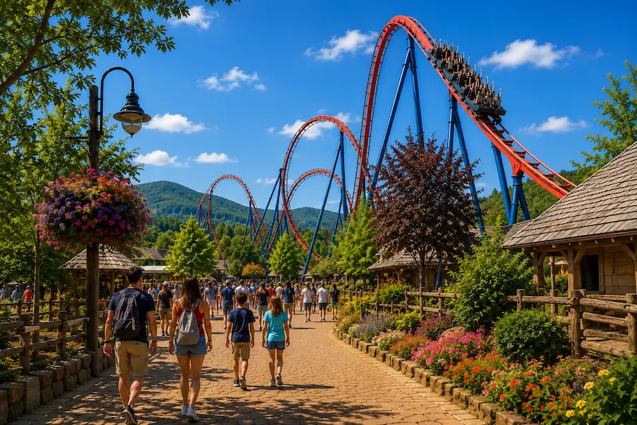
A major French theme park offering more than 35 attractions, shows and water areas for visitors of all ages.
🎢 Walibi Rhône-Alpes combines roller coasters, family rides and thrilling experiences in a park designed for the whole family.
💡 An ideal destination for a leisure day in Auvergne-Rhône-Alpes, with attractions offering different levels of thrills.
🌐 Official website →
One of Europe’s largest theme parks, with numerous themed areas and an impressive variety of attractions.
🎢 Europa-Park combines roller coasters, family attractions and themed areas inspired by different European countries.
💡 The resort can easily justify a multi-day stay, especially when combined with its water park.
🌐 Official website →
A major Mediterranean resort bringing together attractions, roller coasters and themed worlds near Barcelona.
🎢 PortAventura features several themed worlds and some of Spain’s best-known thrill rides.
💡 Its location makes it easy to combine the park, the Mediterranean coast and a stay in Barcelona.
📍 Discover Barcelona → 🌐 Official website →
A park renowned for its highly immersive settings, compact themed areas and several major thrill rides.
🎢 Phantasialand places a strong emphasis on immersion and on integrating its attractions into highly detailed settings.
💡 An excellent stop for roller-coaster fans travelling through Germany.
🌐 Official website →
A huge Polish park that has become a European benchmark for roller-coaster and thrill-ride enthusiasts.
🎢 Energylandia stands out for its impressive concentration of roller coasters and its extensive range of high-thrill attractions.
💡 The park can be included in a trip through southern Poland, particularly around Krakow.
🌐 Official website →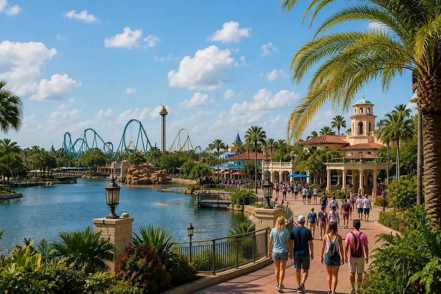
The largest Disney resort in the world, bringing together several theme parks and countless experiences that can easily fill several days.
🏰 Magic Kingdom, EPCOT, Disney's Hollywood Studios and Disney's Animal Kingdom offer four very different experiences within the same resort.
💡 Walt Disney World can become the centrepiece of a multi-day trip to Orlando.
🌐 Official website →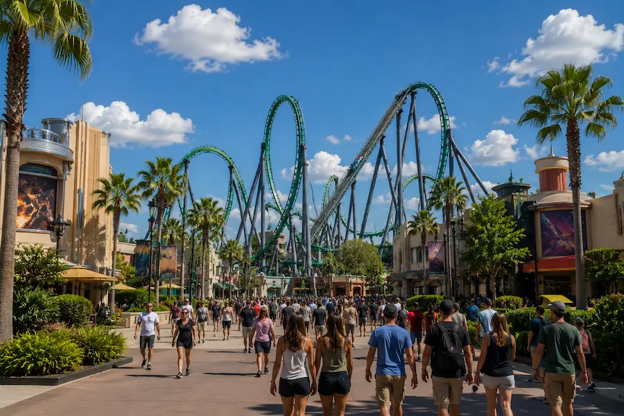
One of Orlando’s largest leisure resorts, with immersive worlds, major attractions and several parks to explore.
🎢 Universal Studios Florida, Islands of Adventure and Epic Universe offer very different worlds, blending movies, adventure and major attractions.
💡 Spending several days here lets you fully enjoy the resort and combine it with Orlando’s other major parks.
🌐 Official website →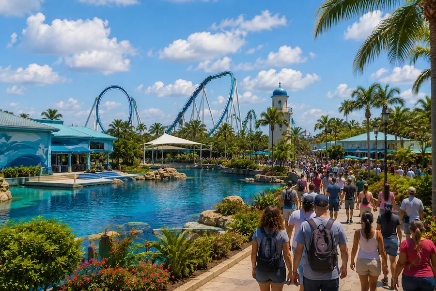
An iconic Orlando park combining a marine theme, animal presentations and several major thrill coasters.
🌊 The park combines marine-life discovery, animal areas and rides, with an especially strong line-up for roller-coaster fans.
💡 A different kind of experience that complements a trip focused on Orlando’s major theme parks.
🌐 Official website →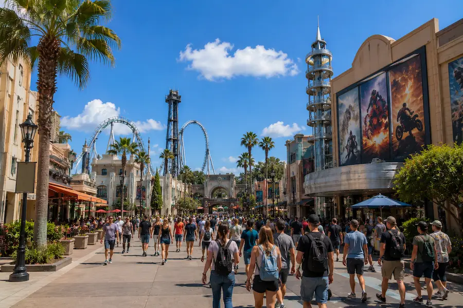
A theme park directly connected to Hollywood filmmaking, combining immersive attractions with a look behind the scenes of the famous studios.
🎬 The famous Studio Tour takes visitors behind the scenes of a real film studio while the rest of the park offers several immersive themed worlds.
💡 Its Los Angeles location makes it easy to include in a trip focused on the city and California.
🌐 Official website →
One of the world’s most highly regarded Disney resorts, bringing together two major parks just outside Tokyo.
🎢 Tokyo Disneyland captures the spirit of a classic Disney park, while Tokyo DisneySea offers a spectacular maritime world unlike any other Disney park.
💡 The resort can easily be included in a Tokyo trip by setting aside one or more days.
📍 Discover Tokyo → 🌐 Official website →
One of Asia’s major theme parks, renowned for immersive worlds inspired by movies, video games and major international franchises.
🎮 The park features immersive areas and numerous attractions combining spectacular settings with technology.
💡 A great reason to include Osaka in a Japan itinerary between Tokyo and Kyoto.
🌐 Official website →
A modern Disney resort that reimagines several classics with attractions and spaces designed specifically for Shanghai.
🎢 The park stands out for its huge central castle and several attractions using highly immersive technology.
💡 It can become one of the highlights of a stay in Shanghai.
🌐 Official website →
A more compact Disney resort set in a mountainous landscape near Hong Kong.
🎢 Its more manageable size makes it easy to include in a Hong Kong stay while still enjoying the classic Disney worlds.
💡 A day here can provide an original break during a trip to the city.
🌐 Official website →
A huge next-generation park developed at Qiddiya near Riyadh, with a strong focus on thrill rides and spectacular experiences.
🎢 The park is part of the vast Qiddiya City leisure project and aims to become one of the world’s major new entertainment destinations.
⚡ One of its headline attractions is Falcon's Flight, a roller coaster designed on an exceptional scale.
💡 Qiddiya is helping turn the Riyadh region into a new international leisure and entertainment destination.
🌐 Official website →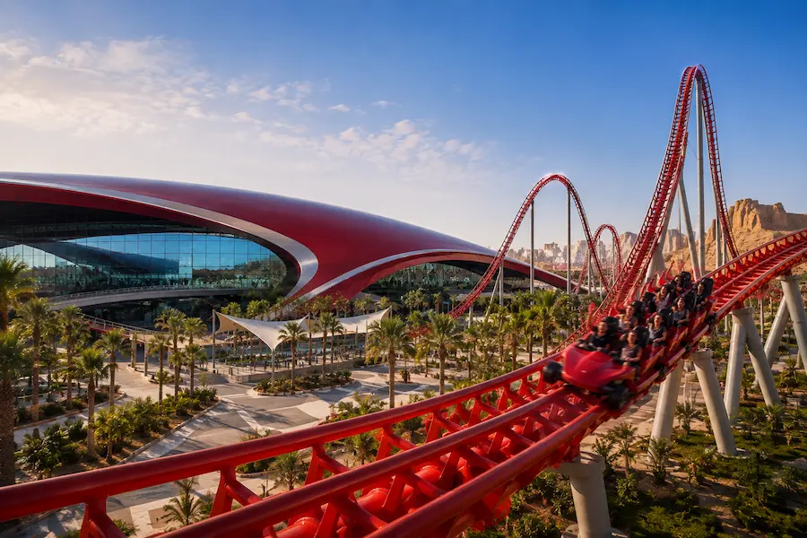
A spectacular indoor theme park dedicated to the world of Ferrari, located on Yas Island in Abu Dhabi.
🏎️ Roller coasters, simulators and Ferrari-inspired experiences immerse visitors in the world of the famous Italian brand.
💡 Ferrari World can easily be combined with the other attractions on Yas Island during a stay in the United Arab Emirates.
🌐 Official website →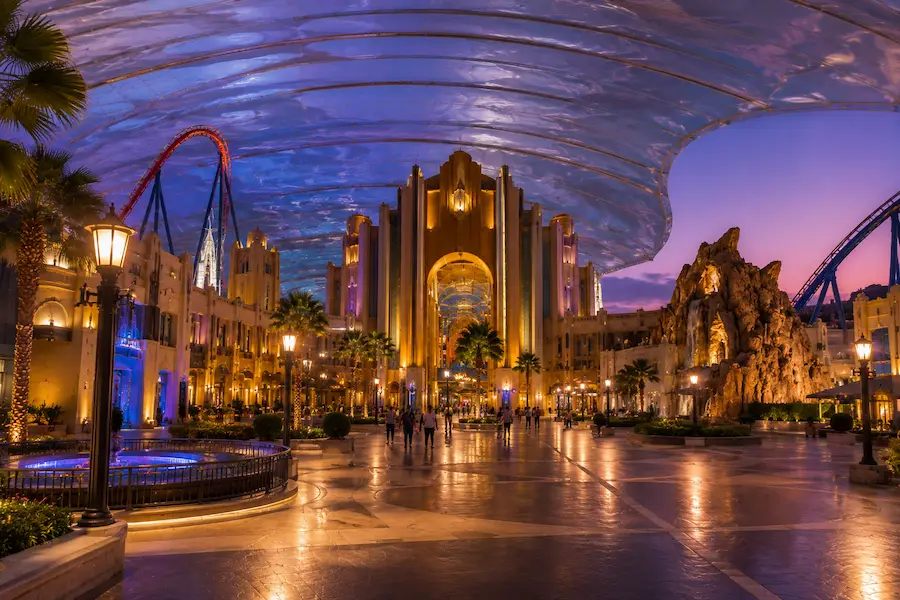
A huge indoor park bringing several iconic Warner Bros. worlds together in fully themed areas.
🎬 Attractions and settings draw inspiration from DC, Looney Tunes and several iconic Warner Bros. characters.
💡 Its Yas Island location makes it easy to combine with Ferrari World during the same stay.
🌐 Official website →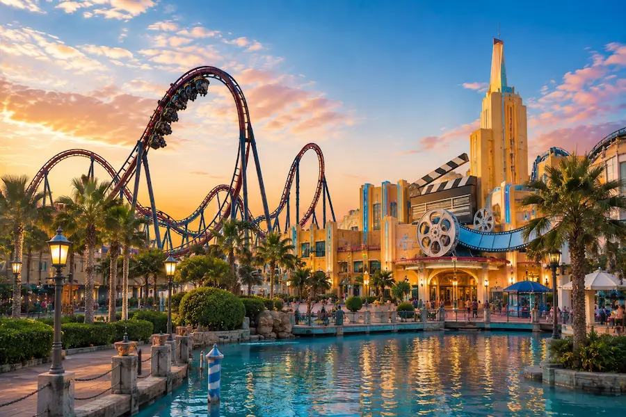
A major movie-inspired theme park with attractions, roller coasters and worlds based on famous Hollywood productions.
🎥 The park brings together several themed areas and numerous attractions inspired by popular films and characters.
💡 Motiongate can easily be included in a few days devoted to leisure and Dubai’s many attractions.
🌆 Discover Dubai 🌐 Official website →🎢 From Disneyland Paris to Orlando, from Japan to the new leisure projects around Riyadh, some parks can become much more than a simple activity: they can be the starting point for an entire trip. Vidolta selects experiences remarkable enough to justify a stop, several days, or even a destination in their own right.
From tropical lagoons to spectacular slides, discover a selection of water parks that can become a major highlight of a trip.

A spectacular water park with a tropical atmosphere that has become one of the signature experiences of a trip to Tenerife.
💦 Thrill slides, a river, a huge wave pool and Thai-inspired settings create a highly immersive experience.
💡 Siam Park can easily become one of the standout days of a trip to the Canary Islands.
🌐 Official website →
A gigantic indoor tropical world set inside a former aircraft hangar, with beaches, pools and water attractions.
🌊 Its distinctive feature is the tropical atmosphere recreated beneath a huge indoor structure, making it enjoyable in any season.
💡 A very different experience from traditional water parks and an easy addition to a trip through Germany.
🌐 Official website →
Europa-Park Resort’s major water world, with numerous indoor and outdoor attractions inspired by Nordic themes.
💦 Slides, pools, a river and themed areas make it easy to spend a full day at Rulantica.
💡 Its appeal for a Vidolta trip is clear: combine Europa-Park and Rulantica during the same stay in Rust.
🌐 Official website →
Universal Orlando’s water park combines a tropical atmosphere, thrill attractions and a huge volcano that has become its symbol.
🌋 Krakatau volcano towers over the park and forms the backdrop for several major water attractions and experiences.
💡 It is a perfect complement to several days spent exploring Universal’s parks during a trip to Orlando.
🌐 Official website →
A Walt Disney World water park imagined as a tropical paradise transformed by a huge storm.
🏄 The park is especially known for its huge wave pool, lazy river and family attractions.
💡 A water-focused day adds variety during a longer stay at Walt Disney World.
🌐 Official website →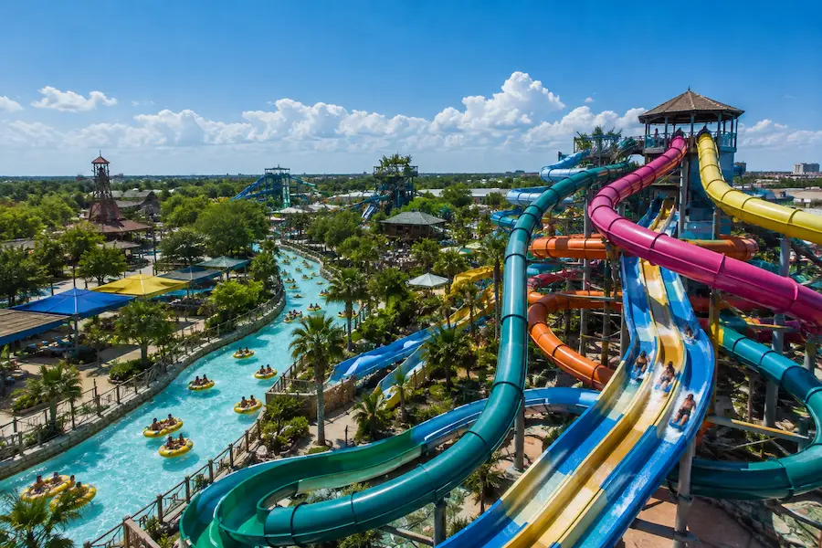
A vast Texas water park known for its rivers, slides and attractions integrated into a natural setting.
💦 The park features numerous water attractions, rapids, family areas and long rides on the water.
💡 An original stop to include on a Texas road trip, particularly between Austin and San Antonio.
🌐 Official website →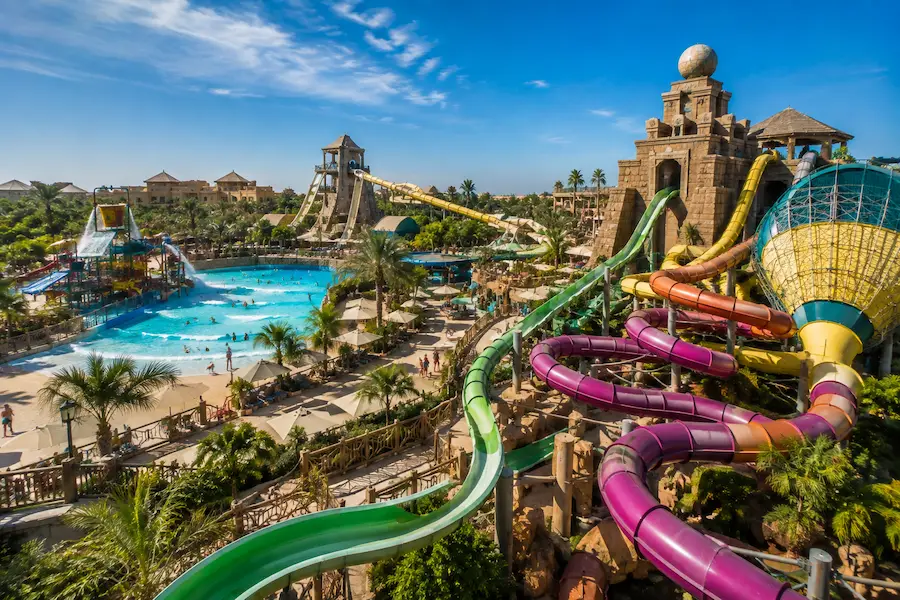
A huge indoor water park inside West Edmonton Mall, offering a tropical atmosphere all year round.
🏄 A wave pool, slides and water attractions fill a gigantic indoor space protected from the Canadian climate.
💡 Its location inside West Edmonton Mall makes it a particularly unusual experience to include in a stay in Western Canada.
🌐 Official website →
A gigantic water park surrounding Atlantis The Palm, combining spectacular attractions, family areas and a beach.
💦 Aquaventure stands out for the scale of its offering and can easily fill an entire day during a stay in Dubai.
💡 Its location on Palm Jumeirah makes it a natural addition to exploring the city.
📍 Discover Dubai → 🌐 Official website →
A major water park on Yas Island, at the heart of one of Abu Dhabi’s main leisure destinations.
💦 The park features numerous water attractions, thrill experiences and areas designed for families.
💡 Yas Island makes it easy to combine several leisure experiences during the same stay in Abu Dhabi.
🌐 Official website →
A tropical water park in the heart of Bali, blending lush vegetation, relaxation and thrill attractions.
🌿 Its tropical setting gives it a very different identity from the large water resorts of Orlando or the Middle East.
💡 An easy experience to include in a few days in southern Bali.
🌐 Official website →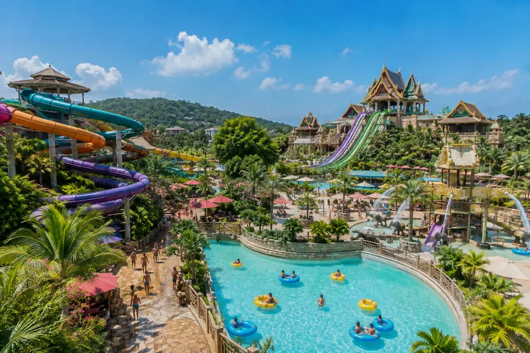
A vast water park inspired by Thai culture and legends, with pools, slides and tropical settings.
💦 The park features numerous thrill attractions, a large wave pool and quieter areas within a highly immersive setting.
💡 An easy day to add to a Phuket stay, alternating beaches, excursions and water activities.
🌐 Official website →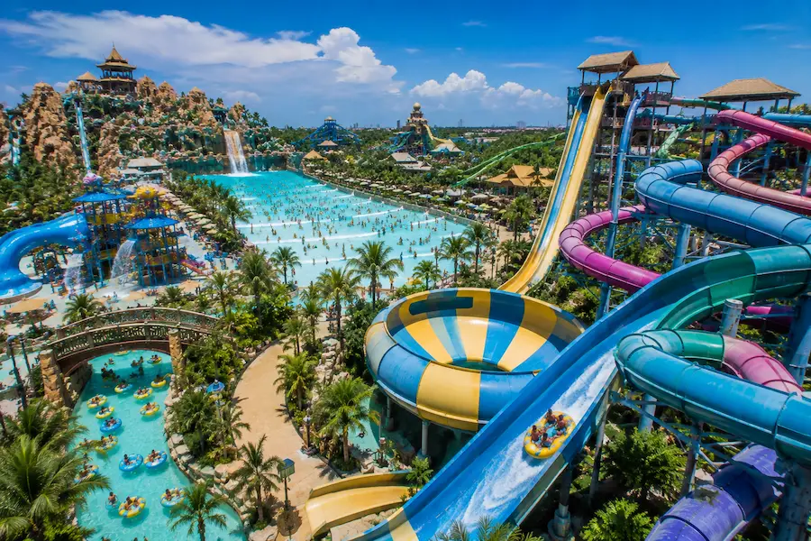
A huge water park within Guangzhou’s Chimelong complex, with numerous large-scale attractions and facilities.
🎢 Spectacular slides, pools, rivers and family attractions make it one of Asia’s major water-park complexes.
💡 It can be combined with the other parks in the Chimelong complex during a stay in the Guangzhou region.
🌐 Official website →💦 From Tenerife to Orlando, Dubai to Bali, water parks can also become a major highlight of a trip. With spectacular settings, water attractions and time to relax, some deserve a place in the itinerary in their own right.
From major international zoos to highly immersive wildlife parks, discover remarkable places where wildlife becomes a genuine travel experience.

One of France’s best-known zoos, with a wide variety of species and several immersive areas spread across a vast site.
🐼 Beauval is particularly famous for its giant pandas, but the park is also home to many species from around the world.
💡 Its size easily justifies a full day, or even longer if you want to explore the park without rushing.
🌐 Official website →
A wildlife park set within a spectacular troglodyte landscape, with large spaces designed to encourage immersion.
🪨 The terrain, vegetation and former quarries give the park an identity very different from traditional zoos.
💡 About 1.5 hours from Nantes, the Bioparc can easily be included in a stay in western France.
📍 Discover Nantes → 🌐 Official website →
A French wildlife park known for its variety of species and its immersive approach across several themed worlds.
🦁 The park brings together iconic species from several continents in a variety of themed areas.
💡 It makes an excellent day out during a stay in western France.
🌐 Official website →
A vast Belgian wildlife park known for its immersive settings, large spaces and worlds inspired by different regions of the globe.
🌍 The park stands out for its elaborate theming, which can sometimes feel like travelling from one continent to another.
💡 It is a destination that can easily fill an entire day during a stay in Belgium.
🌐 Official website →
A major wildlife park in Tenerife that has become one of the island’s leading attractions, with a particularly varied collection.
🦜 The park is especially known for its exotic birds, large animal areas and carefully designed facilities.
💡 Together with Siam Park, Loro Parque greatly strengthens Tenerife’s appeal as a leisure destination.
🌐 Official website →
One of the world’s most famous zoos, set in a huge landscaped park in the heart of San Diego.
🌿 The zoo is renowned for its large planted habitats and the exceptional diversity of species on display.
💡 It fits perfectly into several days spent exploring San Diego and Southern California.
🌐 Official website →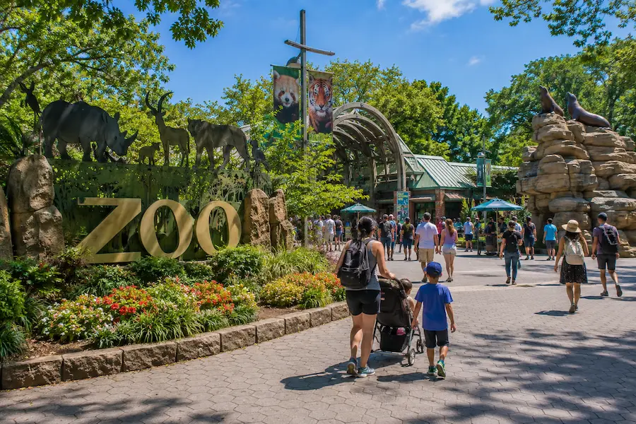
One of the largest urban zoos in the United States, located in the Bronx within a vast natural setting.
🦁 The park is home to hundreds of species in large habitats recreating different natural environments.
💡 An original way to discover another side of New York, away from Manhattan’s busiest tourist districts.
🗽 Discover New York 🌐 Official website →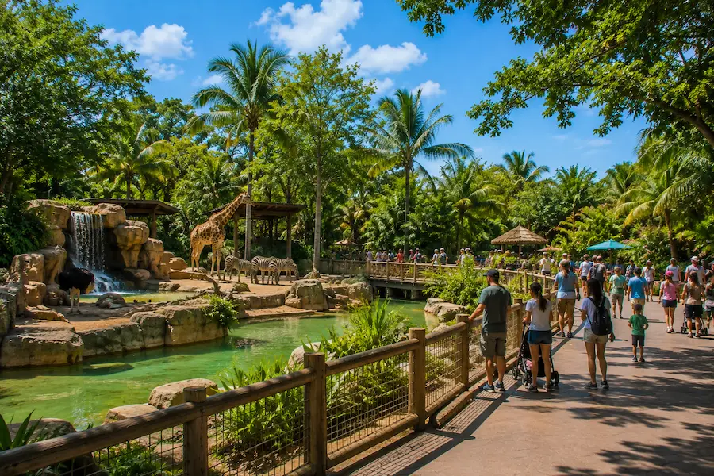
A vast open-air zoo that benefits from Miami’s subtropical climate and is home to animals from many regions of the world.
🌴 Its large spaces and tropical vegetation make it possible to discover many species in a particularly exotic setting.
💡 An easy excursion to include in a Miami stay, adding wildlife to the city’s beaches and iconic neighbourhoods.
🌴 Discover Miami 🌐 Official website →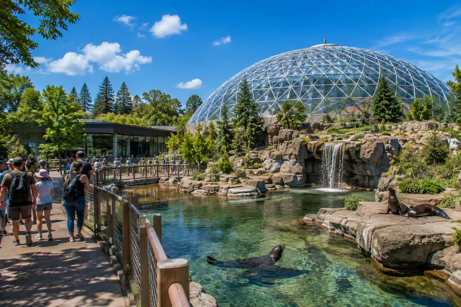
A unique place where visitors can move through several ecosystems of the Americas and observe animals and vegetation in immersive environments.
🌎 Tropical rainforest, maple forest, marine environment and subpolar regions let you move from one ecosystem to another during the same visit.
💡 Located in the Olympic Park area, the Biodome is easy to include in a day exploring Montreal.
🍁 Discover Montreal 🌐 Official website →
A tropical zoo renowned for its open spaces, lush vegetation and immersive approach to wildlife discovery.
🌴 The tropical setting gives the park an atmosphere very different from major European or American zoos.
💡 It can easily become one of the major experiences of a stay in Singapore.
🌐 Official website →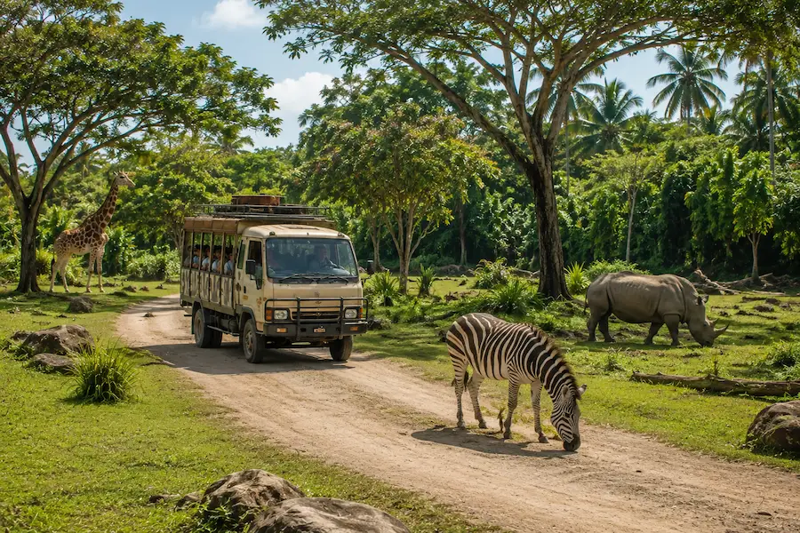
A vast tropical wildlife park where visitors can discover numerous species through experiences inspired by classic safaris.
🐘 The park is home to many Asian and African species in large habitats set within a tropical environment.
💡 An easy wildlife experience to include in a Bali stay between beaches, temples and exploring the island’s interior.
🌐 Official website →
An iconic Queensland wildlife park strongly associated with Australian wildlife and the country’s vast natural landscapes.
🐨 Kangaroos, koalas, crocodiles and many other species offer a broad introduction to Australian wildlife.
💡 A very natural stop on a trip along Australia’s east coast.
🌐 Official website →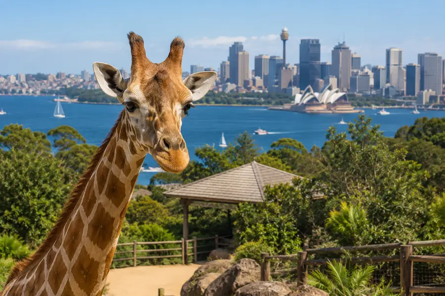
An iconic Sydney zoo set above the harbour, with spectacular views of the city and its famous waterfront.
🦘 The park features Australian and international species in an exceptional setting facing the Sydney skyline.
💡 Crossing the harbour and visiting the zoo can easily become a full day during a stay in Sydney.
🌐 Official website →🐼 From Beauval to San Diego, Singapore to Australia, some wildlife parks have become genuine travel experiences. With remarkable species, large spaces and immersive worlds, they can become a memorable part of a trip.
Zip lines above the jungle, underground rivers, volcanoes, natural phenomena and outdoor experiences: discover places where adventure and exploration become part of the journey.
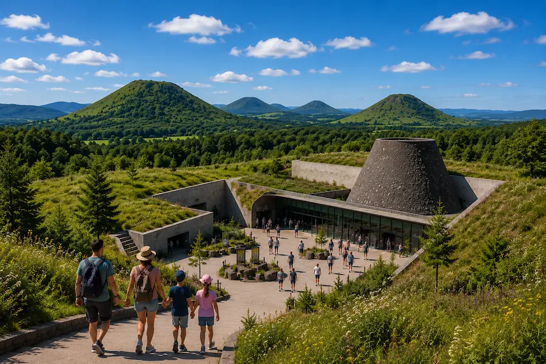
In the heart of the Auvergne volcanoes, Vulcania offers an original experience combining science, natural phenomena, attractions and immersive experiences.
🌋 Explore volcanoes, the Earth and major natural phenomena through interactive and immersive experiences.
🌍 The park combines scientific discovery, projections, activities and attractions to help visitors better understand the forces shaping our planet.
💡 An original stop during a stay in Auvergne, especially for families exploring the volcanic region.
🌐 Official website →
A spectacular adventure park combining zip lines above the jungle, caves, underground rivers and amphibious-vehicle routes.
🪂 Zip-line circuits cross the vegetation and link several routes at different heights.
💧 The experience continues underground through rivers, caves and natural rock formations.
💡 One of the most impressive parks to include in a stay on the Riviera Maya.
🌐 Official website →A huge park combining nature, Mexican culture, underground rivers, wildlife and shows in a tropical setting.
🌿 Xcaret combines natural spaces, swimming, cultural discovery and numerous experiences spread across a vast site.
💡 The park can easily fill a full day and is one of the major experiences of the Riviera Maya.
🌐 Official website →
A natural water park built around a huge lagoon where fresh water meets the sea.
🐠 Snorkelling, swimming, a river, tropical vegetation and outdoor activities create an experience that feels far more natural than a conventional water park.
💡 It combines easily with Tulum or other stops on the Riviera Maya.
🌐 Official website →
Monteverde’s cloud forest has become one of the world’s leading destinations for zip lines and suspended routes above the canopy.
🌳 Zip lines, suspension bridges and forest routes offer a spectacular way to discover the canopy.
💡 Monteverde is especially appealing for combining adventure, biodiversity and natural landscapes within the same trip.
🌐 Official website →
A world of caves, underground rivers and natural formations where some activities turn exploration into a genuine adventure course.
🕳️ Caving, moving through water and underground routes create an experience very different from traditional parks.
✨ Waitomo’s famous glowworms give the caves a particularly spectacular atmosphere.
🌐 Official website →
A destination famous around the world for thrill activities set among spectacular mountains, lakes and valleys.
🪂 Jumps, zip lines, jet boats and many other activities make it possible to build several days entirely around adventure.
💡 Here, the experience is not defined by a single enclosed park: the entire destination works like one huge adventure playground.
🌐 Official website →🌿 Volcanoes, remarkable landscapes, science and exploration: some parks offer another way to discover a destination. These are experiences where nature and discovery can become a genuine part of the journey.
A park can be much more than a simple activity during a stay. Some resorts, water parks, zoos or adventure experiences can justify a multi-day stop in their own right, or even become the starting point for a trip.
On Vidolta, parks are progressively linked to the destinations around them to help you plan your stay, discover nearby activities and build a trip around the experience that attracts you.
Start with the type of experience you are looking for: major theme parks, water worlds, wildlife discovery or outdoor adventure. Then consider the destination, how much time you need there and the other experiences available in the region.
Large resorts such as Walt Disney World or Universal Orlando can easily fill several days. Other destinations such as Europa-Park, Disneyland Paris, Tokyo Disney Resort or the major Yas Island complexes can also become an important part of a stay.
When relevant offers are available, Vidolta may provide links to tickets, activities or accommodation to make planning your stay easier. Options vary depending on the park and destination.
Yes. Parks and attractions are progressively linked to the corresponding Vidolta destinations so you can discover must-see places, nearby activities and other experiences to include in your trip.

Legendary parks, jungle adventures, water worlds or wildlife encounters: choose the experience that inspires you and discover the destination around it.
🌎 Explore destinations